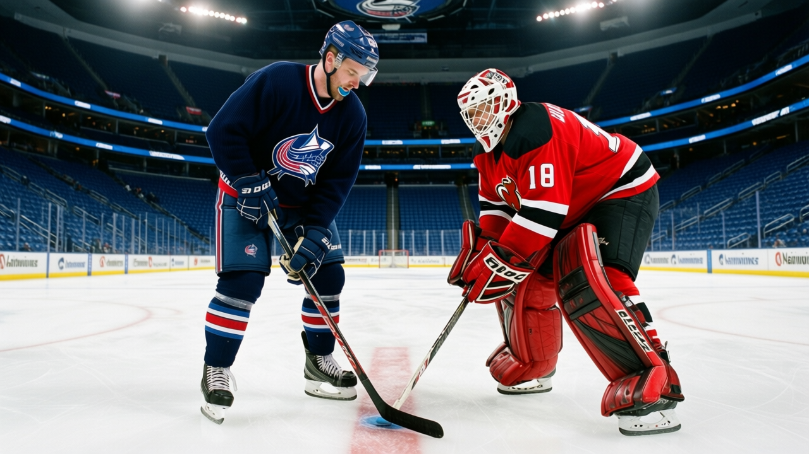

The First Time He Picked a Place: Geoff Sanderson, 32, and the 164 pace nobody has a use for
Twelve seasons, five clubs, and then Columbus asked him to be captain before the ink dried. Now he's scoring third in the league and the team is 14-17-2.
 Carol BinghamFeatures writer · Rinkside
Carol BinghamFeatures writer · Rinkside Geoff Sanderson83 was born in Hay River, Northwest Territories, and left it at 18. The 1990 draft took him 36th overall, second round, Hartford. Twelve seasons later he has played for five clubs, lost a franchise to relocation, been traded twice in the same month, and arrived at a team that didn't exist until 2000. He is 32. He has 80 points in 40 games, a pace of 164 over 82, which is third in the league behind
Geoff Sanderson83 was born in Hay River, Northwest Territories, and left it at 18. The 1990 draft took him 36th overall, second round, Hartford. Twelve seasons later he has played for five clubs, lost a franchise to relocation, been traded twice in the same month, and arrived at a team that didn't exist until 2000. He is 32. He has 80 points in 40 games, a pace of 164 over 82, which is third in the league behind  Jaromir Jagr89 and
Jaromir Jagr89 and  Bill Guerin89.
Bill Guerin89.
He is also the captain of a team that is 14-17-2.
The suitcase
"You get moved enough times and you stop being a guy who belongs somewhere. You're just a guy with a suitcase," Sanderson told The Tunnel's Marcus Bell this week. "But I'll tell you, coming back here, to Columbus, that was the first time I picked a place. Not the other way around."
That sentence holds twelve years. Hartford took him in 1990 and he scored more than 30 goals every season except the lockout year, and they missed the playoffs every single one. The franchise became Carolina halfway through 1997-98 and traded him to Vancouver before the season ended. Vancouver moved him to Buffalo a short time later. The Sabres made the Final in 1999; Sanderson had third-line numbers. In 2000 Columbus took him in the Expansion Draft. He scored 30-plus there twice. Then came the trade deadline in 2003-04, back to Vancouver, a goal in a first-round loss to Calgary, and now here again.
"They asked me to be a captain," he said. "Before I'd even signed, before the ink. Somebody said, we want you here to hold this together. I've never had that. Thirty years old, twelve seasons in, and nobody had ever stood in front of me and said, you're the one."
The numbers
The Book has him at 85, two below his base grade of 87. His speed is 93, his shot power 91, his accuracy 92. He is 32 years old and his game is a 93 speed and a 91 shot, which means he has spent twelve seasons getting the puck to the net faster than the men around him and watching his teams miss the playoffs. The league's scoring pace tells the rest:
| Rank | Player | Club | Pace | GP | Points |
|---|---|---|---|---|---|
| 1 | Jaromir Jagr |  Washington Capitals Washington Capitals | 172 | 41 | 86 |
| 2 | Bill Guerin |  Dallas Stars Dallas Stars | 166 | 43 | 87 |
| 3 | Geoff Sanderson |  Columbus Blue Jackets Columbus Blue Jackets | 164 | 40 | 80 |
| 4 |  Vincent Lecavalier84 Vincent Lecavalier84 |  Tampa Bay Lightning Tampa Bay Lightning | 164 | 40 | 80 |
| 5 |  Markus Naslund89 Markus Naslund89 |  Vancouver Canucks Vancouver Canucks | 160 | 40 | 78 |
He is tied with Lecavalier for third. Lecavalier is 24, drafted first overall, and plays in front of the two best wingers in Tampa Bay's history. Sanderson plays next to  Todd Marchant82, 84 overall, and
Todd Marchant82, 84 overall, and  David Vyborny78, 80, behind
David Vyborny78, 80, behind  Pascal Leclaire86, 88, who is the best thing in the building and still 22 years old.
Pascal Leclaire86, 88, who is the best thing in the building and still 22 years old.
The system
Sanderson scored 115 points in 64 games last season, which was a good year. He was in Vancouver by then, having been moved from Columbus at the deadline, and he scored in the playoffs before the Flames went through. "I didn't feel like I was in the right system," he said. "Not that I was bad. I was, you know, a piece of the puzzle. Not the center of it."
Now he is the center of it, and Columbus is 14-17-2 with a goal differential of +4. The room has Pascal Leclaire, 8th pick in 2001, 20 games and 13 wins and a 2.95 goals-against, grading 88 and up 4 on the Development Index this month. It has Marchant, 31, a contract-year man at $4.88M. No second center, no defenseman above 80, a payroll of $48.98M that puts the team 13th in the league.
The captain who doesn't look at the table
Sanderson has 2 years and $6.34M left on his contract. Morale 92. He is not leaving. He picked this place.
"I'll just play and if they want to watch, they can watch," he said. "But it means something. When you're twenty-three, twenty-four, and the captain is in front of the net late in the third, and he's getting hit, and he's not going down? That's a conversation without words."
He is a 50 in the fighting grade and a 52 in injury resistance. The 91 shot power and the 93 speed carry him to those spots before the defenseman can decide whether to hit him. His hero grade is 92, which is the Bureau's word for a man who makes the play that isn't there yet, and he has been making it since he was 19 in Hartford, in a building that never made a postseason.
Columbus has never made a postseason either. The team's best playoff run is a first-round loss. Prestige 407, no Cups, 13,778 fans a night. It is not a cold room by the numbers. It is just an empty one, most nights, and a 164-pace left wing with a 50 fight grade is the only thing in it that grades above 87.
What the arc says
Nineteen in Hartford, scoring 30 and missing the playoffs. Twenty-five in a franchise that moved overnight. Twenty-six, traded twice in three weeks. Twenty-seven watching Dallas win a Cup he was on the losing side of. Twenty-eight picked in an expansion draft for a team that didn't exist yet. Thirty in Vancouver, a third-liner in a Cup Final loss, then thirty-one scoring 115 points in a good year that was a piece of someone else's puzzle.
Now, the first time he chose, not the other way around. A 164 pace at 32, a $6.34M salary that grades as franchise money for a man who grades 85, and a team that is 5 games below .500 and has no idea what to do with him yet.
"I told them, look, I'm not a coach on skates, I'm not going to lecture the young guys," he said. "I'll just play."
He is. The league is 40 games in, Columbus has 14 wins, and Sanderson is third in pace. The suitcase is unpacked, and nobody else in the building knows what to do with it.